vignettes/hitRcovid-vignette.Rmd
hitRcovid-vignette.RmdThe Health Intervention Tracking for COVID-19 (HIT-COVID) project tracks the implementation and relaxation of public health and social measures (PHSMs) taken by governments to slow transmission of SARS-COV-2 globally. Hundreds of volunteer data contributors were trained, provided with standardized field definitions and access to an online forum for asking questions and sharing ideas. Each change in policy and corresponding date is documented at the first-level administrative unit (e.g., states, districts) and nationally for all countries with more detailed geographic resolution in some locations (e.g., counties in the US).
Data are entered into a structured questionnaire with a source document(s) required for each record. Source documents from official government sources are preferred, but other sources are permitted when official sources are unavailable. For each intervention, HIT-COVID captures a suite of additional data including whether interventions are required or recommended and the particular subpopulation to which policies apply. To ensure data quality, contributors are asked to complete weekly self-audit reports, have the ability to submit corrections on past entries, and the management team performs geographic or intervention-specific audits as issues arise.
This package can be used to easily access, filter, and visualize the HIT-COVID database. The full database including detailed documentation is available in the hit-covid repository and more details can be found on the website. The creation of the database is also described in detail in this paper.
You want to start by installing hitRcovid if you have not already done so using:
devtools::install_github('https://github.com/HopkinsIDD/hitRcovid.git')
Then you can load the package by running:
library('hitRcovid')
Before using any of the filtering or visualization functions you first need to pull the HIT-COVID database using hit_pull(). The default behavior of this function will use the covidregionaldata package to include the date of the first case of COVID-19 and the first death from COVID-19 for each country.
hit_data <- hit_pull()
You can change the source of the case data (WHO or ECDC) using the source arguement. If you do not want the dates of the first case and first death you can use the option add_first_case = FALSE. This will also increase the speed of the function.
You can then filter the database by location and/or intervention type using hit_filter() function. This function is meant to be very flexible and the various options are described in detail in the documentations.
The country and admin codes to be used for filtering can be found in the geo_lookup dataframe provided in the package. Additionally, the admin1 codes that have data in the database for a specified country can be printed by using get_admin1.
get_admin1(hit_data, country = "USA") #> [1] "USA.1_1" "USA.36_1" "USA.43_1" "USA.39_1" "USA.25_1" "USA.23_1" #> [7] "USA.5_1" "USA.2_1" "USA.33_1" "USA.44_1" "USA.48_1" "USA.14_1" #> [13] "USA.11_1" "USA.28_1" "USA.16_1" "USA.6_1" "USA.30_1" "USA.51_1" #> [19] "USA.45_1" "USA.47_1" "USA.9_1" "USA.18_1" "USA.34_1" "USA.8_1" #> [25] "USA.10_1" "USA.42_1" "USA.46_1" "USA.27_1" "USA.21_1" "USA.20_1" #> [31] "USA.19_1" "USA.38_1" "USA.12_1" "USA.49_1" "USA.31_1" "USA.22_1" #> [37] "USA.17_1" "USA.7_1" "USA.4_1" "USA.13_1" "USA.26_1" "USA.40_1" #> [43] "USA.24_1" "USA.50_1" get_admin1(hit_data, country = "GBR") #> [1] "GBR.4_1" "GBR.3_1" "GBR.1_1" "GBR.2_1"
This code filters to all data from Great Britain:
gbr <- hit_filter(hit_data, country = "GBR") nrow(gbr) #> [1] 172
You can also look at just the national-level data by removing all admin1 data:
gbr_national <- hit_filter(hit_data, country = "GBR", include_admin1 = FALSE) nrow(gbr_national) #> [1] 11
You can filter by continent, for example looking at all policies in Africa and Asia:
afr <- hit_filter(hit_data, continent = c("Asia", "Africa")) nrow(afr) #> [1] 4659
You can also filter by intervention type. The intervention group codes and names can be found in the intervention_lookup dataframe provided in the package or all options can be printed using the function get_interventions(). Then you can use those codes to filter by intervention type either on their own or in conjunction with location filtering.
get_interventions() #> [1] "enforcement_deployed" "mask" #> [3] "state_of_emergency" "closed_border" #> [5] "household_confined" "limited_mvt" #> [7] "entertainment_closed" "nursing_home_closed" #> [9] "office_closed" "public_space_closed" #> [11] "public_transport_closed" "religion_closed" #> [13] "restaurant_closed" "school_closed" #> [15] "social_group_limits" "store_closed" #> [17] "contact_tracing" "quar_iso" #> [19] "symp_screening" "testing_asymp" #> [21] "testing_symp"
Here is the code to look at school closures and restaurant closures across the entire database:
school_restaurant <- hit_filter(hit_data, intervention = c("school_closed", "restaurant_closed")) nrow(school_restaurant) #> [1] 1945
Here we are looking at all mask policies across three US states and removing the national data:
us_mask <- hit_filter(hit_data, intervention = "mask", admin1 = c("USA.22_1", "USA.31_1", "USA.39_1"), include_national = FALSE) nrow(us_mask) #> [1] 10
The function intervention_map() can be used to display a world map showing the current status of a one intervention group at a date specified. The documentation provides details about all of the filtering and visualization options.
Here is an example of a map of the status of school closures on April 1, 2020:
intervention_map(hit_data, intervention_group = "school_closed", time_point = "4/1/2020")
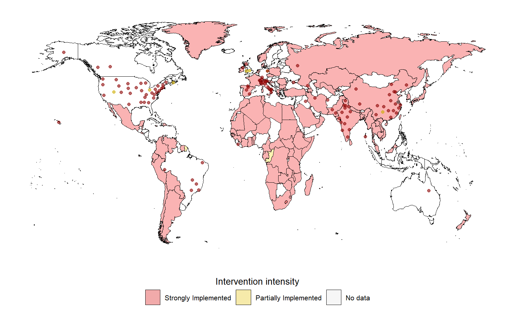
And here is the map of the status of school closures on September 1, 2020:
intervention_map(hit_data, intervention_group = "school_closed", time_point = "9/1/2020")
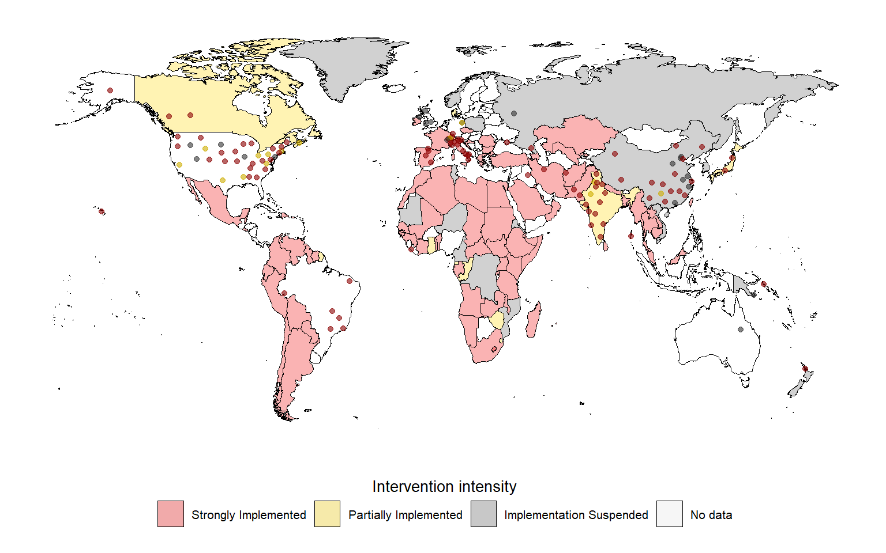
Here are the global mask policies on April 1, 2020 and then on 9/1/2020
intervention_map(hit_data, intervention_group = "mask", time_point = "4/1/2020")
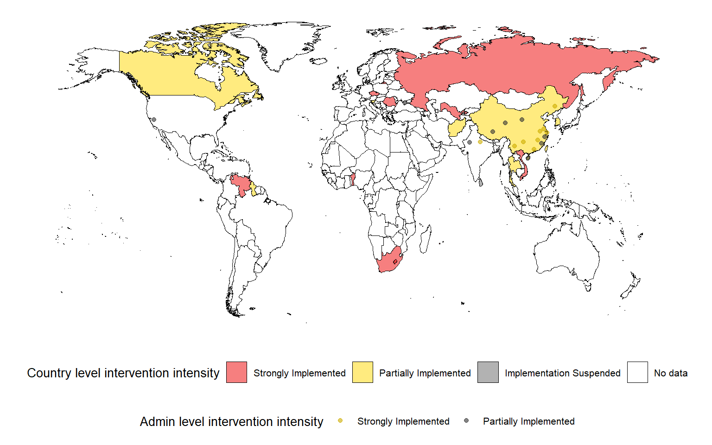
intervention_map(hit_data, intervention_group = "mask", time_point = "9/1/2020")
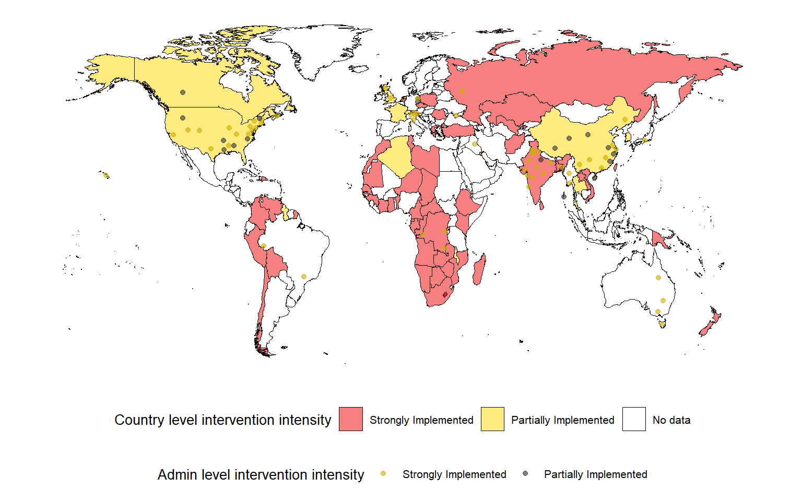
The function, intervention_timeline() can be used to display a timeline of all of the intervention updates in the database using hit_filter() to focus on the locations and/or intervention types specified. The documentation provides details about all of the filtering and visualization options.
The plot can be faceted by continent, country, or admin1 unit if desired. The user can also specify if they want the a line drawn for the date of the first case and/or first death. If desired, both national and admin1 data can be plotted or just one level. The following are numerous examples to demonstrate the functionality of this plot.
This is a timeline of all national and admin1 data in the database, in North America, Asia, Europe and Africa faceting by continent which is a fairly busy plot:
intervention_timeline(hit_data, continent = c("Asia", "Europe", "Africa", "North America"), facet_by = "continent")
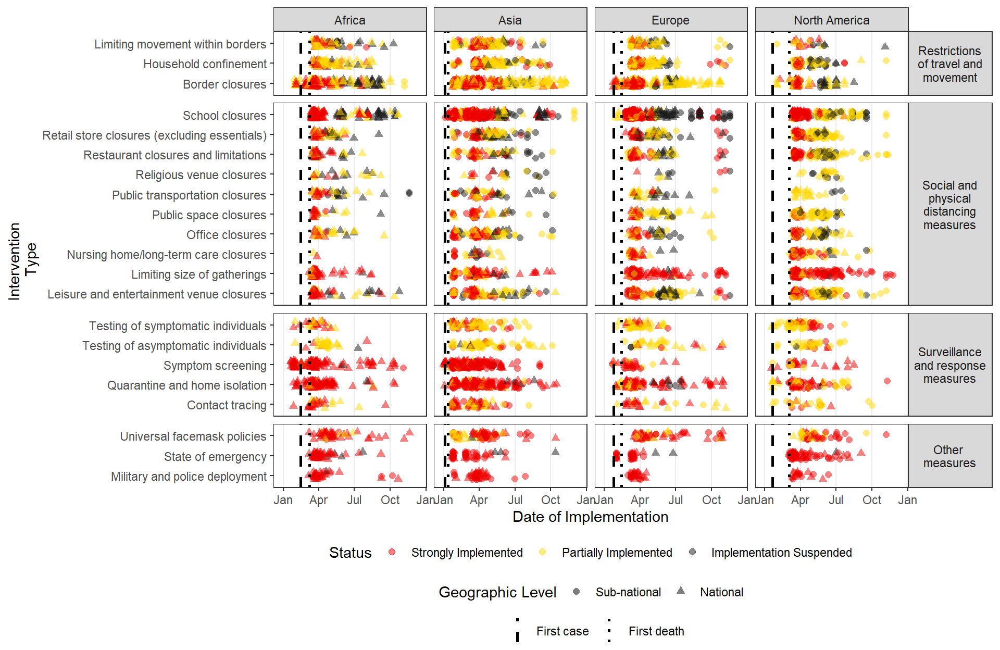
This is a timeline of all data from India and New Zealand faceting by country:
intervention_timeline(hit_data, country = c("IND", "ZWE"), facet_by = "country")
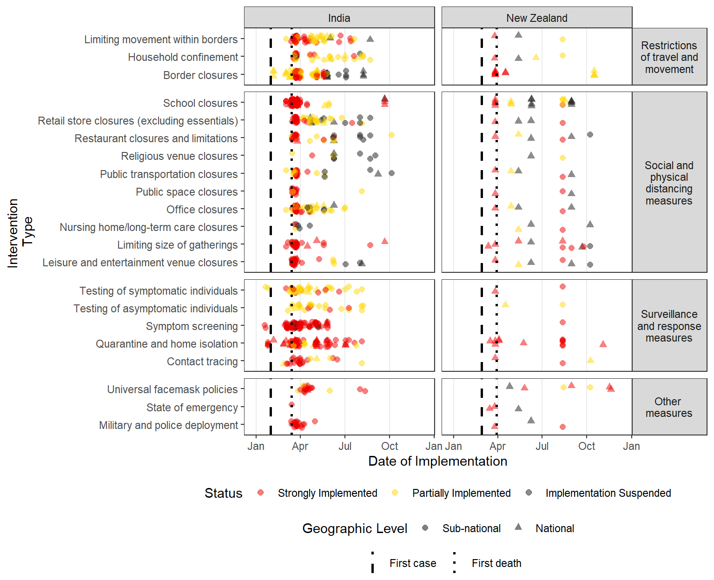
This a timeline of the USA data but removes the national policies (only includes state-level data)
intervention_timeline(hit_data, country = "USA", include_national = FALSE)
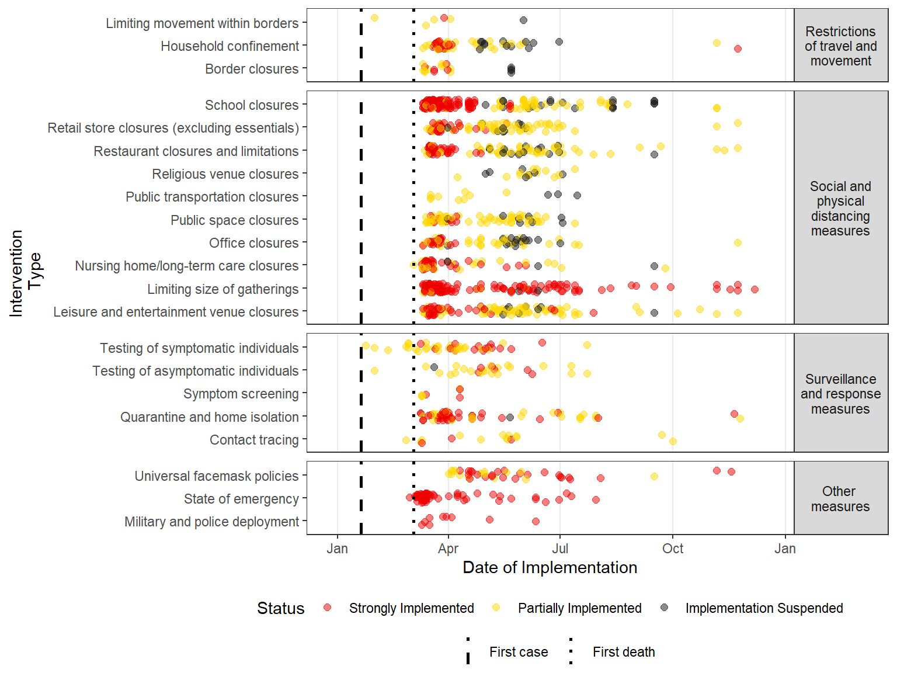
This timeline focuses on three US states faceting by state and including national data
intervention_timeline(hit_data, admin1 = c("USA.22_1", "USA.31_1", "USA.39_1"), facet_by = "admin1", include_national = TRUE)
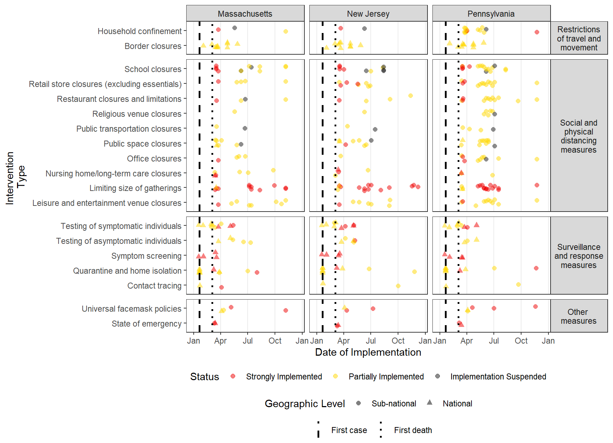
This plot removes the lines representing the first case and first death in the US from the previous timeline
intervention_timeline(hit_data, admin1 = c("USA.22_1", "USA.31_1", "USA.39_1"), facet_by = "admin1", include_national = TRUE, first_case_line = FALSE, first_death_line = FALSE)
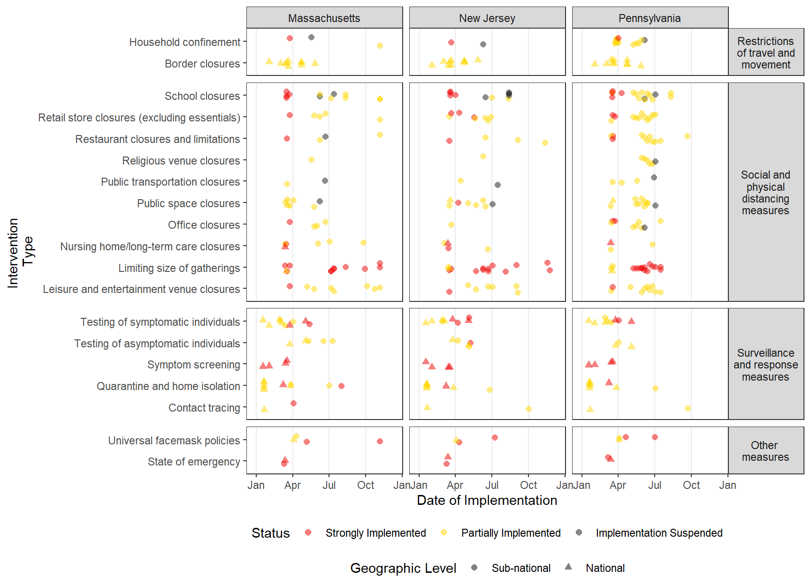
This is a timeline of of all of the data from Great Britain restricting to social and physical distancing measures and masking.
intervention_timeline(hit_data, country = "GBR", facet_by = "admin1", intervention = c("mask", "entertainment_closed", "office_closed", "public_space_closed", "religion_closed", "restaurant_closed", "school_closed", "social_group_limits", "store_closed"), intervention_facet = FALSE)
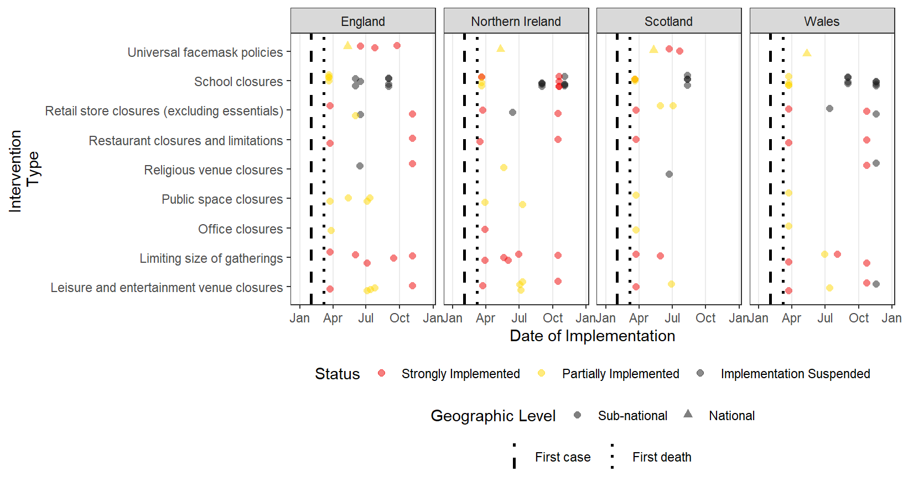
The funciton intervention_epi() can be used to display a barplot of daily case counts (the epi-curve) along with a timeline showing the status of selected interventions (border closures, household confinement, universal mask mandates, restaurant closures, primary school closures, and retail store closures) over time.
The main usage would be to plot the epi-curves at the country level, but admin1 level case counts are available for 11 countries (Afghanistan, Belgium, Brazil, Canada, Columbia, Germany, India, Italy, Russia, UK, and USA). Only one country or admin1 unit can be plotted at a time. The user can specify the date range for the plot using first_date and last_date. Another way to restrict the plot is to change case_threshold. In this case the earliest date of the plot will be when the total number of cases in the country exceeded case_threshold.
Here is the epi-curve for India starting from January 1, 2020:
intervention_epi(hit_data, country = "ETH")
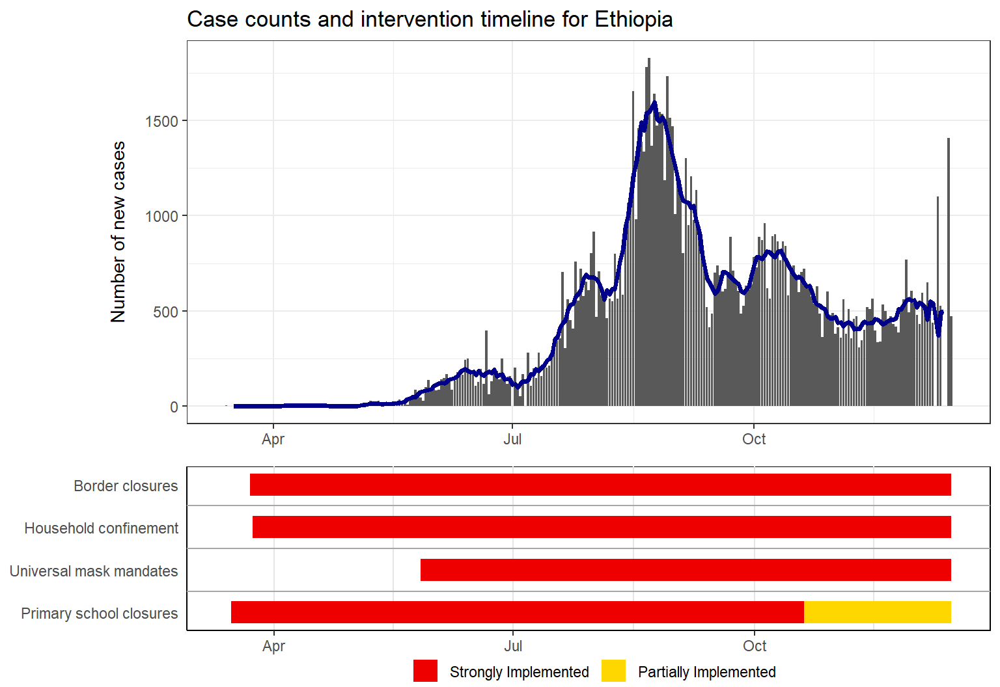
This plot starts when there were more than 100 cases in India:
intervention_epi(hit_data, country = "ETH", case_threshold = 100)
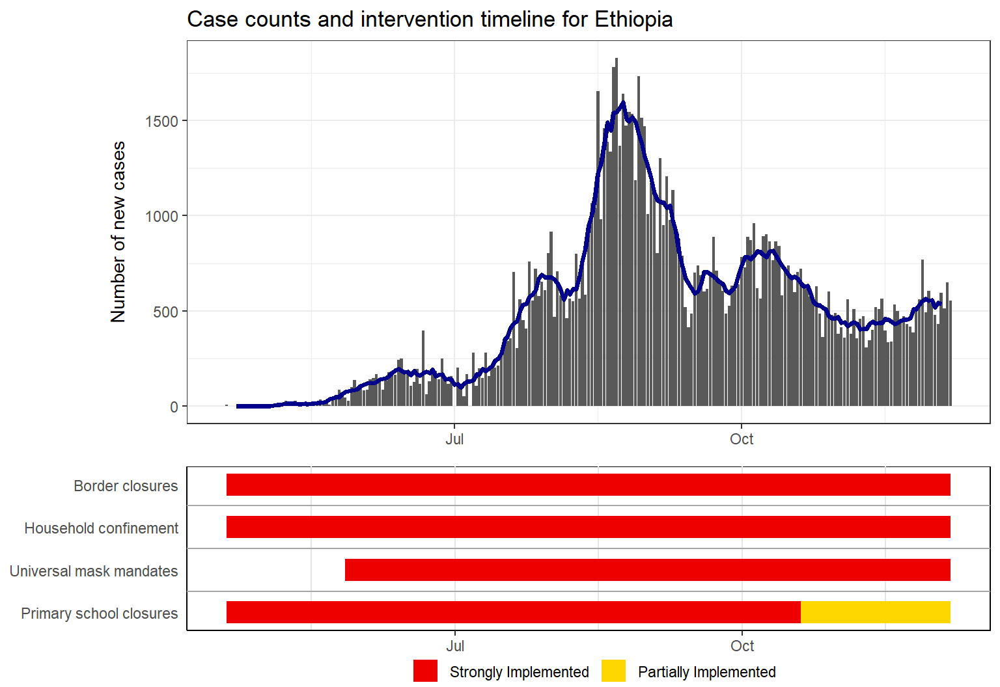
Here is the epi-curve for India from February to August:
intervention_epi(hit_data, country = "IND", first_date = "3/1/2020", last_date = "8/31/2020")
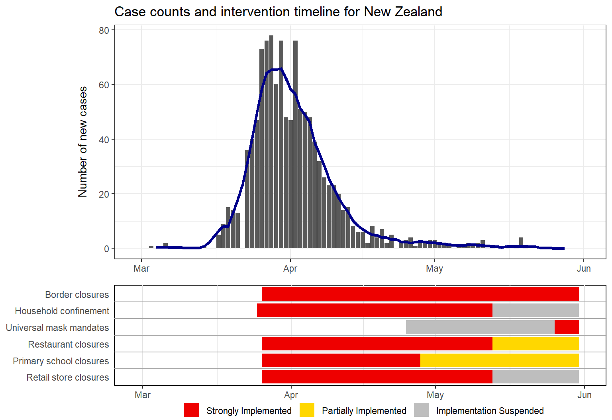
Here is the epi-curve for England starting when there were 100 cases
intervention_epi(hit_data, admin1 = "GBR.1_1", case_threshold = 100)
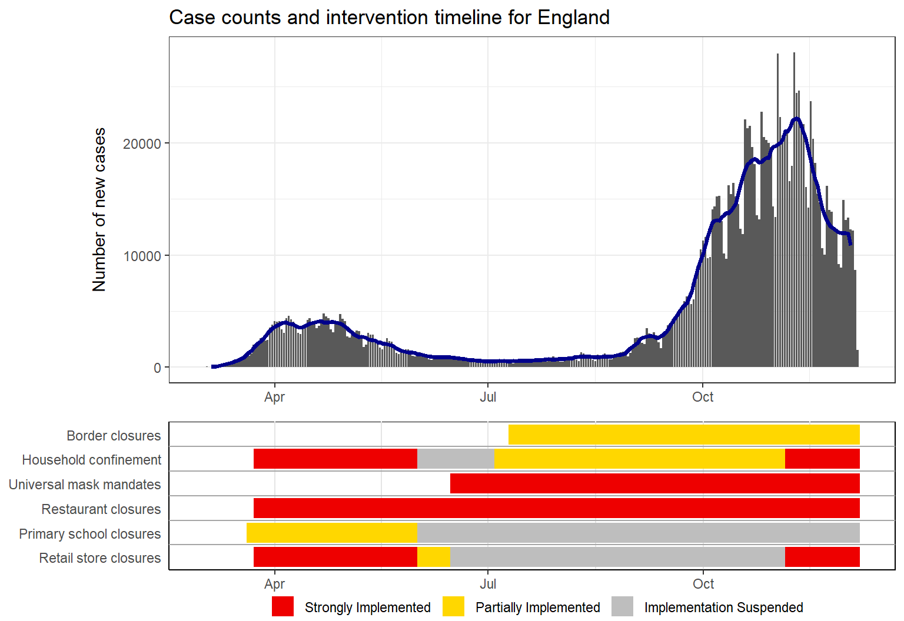
See also the list of data contributors who participated in this project.
This dataset is licensed under the GNU General Public License v3.0 - see the LICENSE.md file for details
Contact: Andrew Azman (azman@jhu.edu) or hit-covid@jhu.edu
Comments and Limitations
The HIT-COVID database is a managed crowd sourcing effort supported by numerous volunteers over the past eight months. Because of this data collection effort, the database is not complete for all countries and admin1 units. This should be taken into account when using this database.
This caveat is especially important when interpreting the intervention timelines printed under the epi curves. These final bars of each timeline represent the last logged status of an intervention. For some locations, the intervention data may not have been updated which means that older policies would appear to carry to the present when they are not still active. Care should be taken when interpreting these plots without knowledge of the completeness of the intervention data of the location of interest.
If you are interested in working on a particular are which has incomplete data and would like to contribute to this database, please reach out to the management team at hit-covid@jhu.edu.